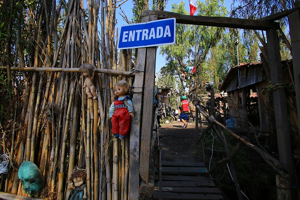
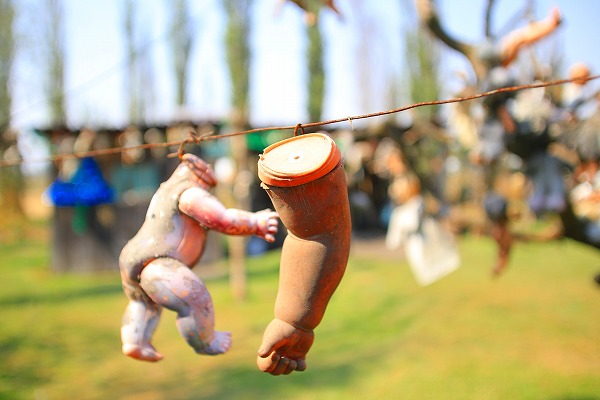
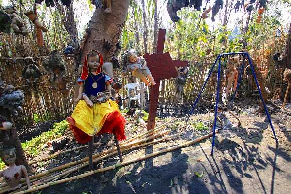

人形島/ソチミルコ、メキシコシティ La Isla de la Munecas/Xochimilco,CDMX
オアハカでのウォーミングアップを経ていよいよベースを
メキシコシティに移す。
メキシコシティは言うまでもなくメキシコの首都であり、スペイン語ではCiudad de Mexico、略してCDMXと表記される。
メキシコシティを含む中央高原部は標高が1500ｍ程で、訪れた頃は朝3℃、昼30℃と言った凄い寒暖差であった。
おかげでダウンジャケットの下にTシャツを着て脱いだり着たりの毎日だったよ…。
そんなシティ初日に訪問したのが郊外の
ソチミルコXochimilco。
メキシコシティの南部に広がる広大な水郷だ。
元々広大な湖だった場所を埋め立ててメキシコシティは出来上がったと言われているが、そのかつての姿を彷彿とさせるように無数の水路が縦横に張り巡らされているのだ。
ちなみに世界遺産の構成要素になっている。
そんな水路にトラヒネラという観光船で繰り出して遊ぶのが、ここソチミルコの
オツな遊び方なのだ。
今回の旅の友、大魔王君と合流し船をチョイス。
…にしてもかなり陽気なディスプレイだ。

船の形状としては底の浅い、日本で言えばどんこ船のよう。色は全く違うが。
さて。
我々が何故こんな舟遊びをしているか、と言えばそれには深い訳がある。
この先に
人形島と呼ばれる島があるのだ。
どんな所か、というのは後のお楽しみだが、今や
メキシコで一番有名な裏観光地と称される島なのだ。
この島に行くのにはチョットした注意が必要だ。
まず
船のチャーター時間。
正確な料金は忘れたが確か1時間2000円程度。メキシコの物価に比べたらややお高い印象。
しかしここでケチっては人形島には辿り着けないのだ。
人形島への往復には（島での滞在時間を含めて）4時間弱ほどかかる。
従って4時間以上のコースを選択せねばならないのだ。
船着き場の料金表には4時間コースに思いっきり日本語で人形島と書いてありました。
どうやら特に日本人に人気のスポットのようだ。
当時のレートでも7～8000円ほどの出費はやや痛いが、それだけの価値はある！…と信じて4時間チャーター。
一艘の値段なので同行者が多ければ多いほど一人当たりの運賃は安くなるので、もし人形島に行きたい方は現地で同行者を募るのもひとつの方法かと。
あと一番大事なのは船頭によって人形島に行きたがらない横着な輩もいる事を覚えておいていただきたい。
詳しくは後に述べるが、船頭によっては「今日は上陸出来ない」とか言う者もいるので、
人形島に上陸できるかどうかは事前に確認しておいた方が良いでしょう。
…という訳で、VAMOS！
船頭のアニキが竿一本で船を操作してくれる。
穏やかな水路を船は進む。
岸辺に建物はほとんどなく、畑が延々と続く。
喧噪のシティ中心部から10数㎞しか離れていないのに恐ろしいほど静かな場所だ。
エンジン船ではないのでちゃっぷん、ちゃっぷんと水に竿を挿す音だけがするだけ。
運河には数多くの分岐点がある。
道（水路）を間違えたら大変なことになりそう。
正直言ってあまり変わりばえしない風景が続く。
飽きてきたから昼寝でもするか…
…と思ったら、お菓子や酒が積まれた船がやってきた。
迷わずセルベッサポルファボール（ビール頂戴～）！
その後、食料や酒、土産物などを積んだ様々な船がやってきた。
中にはマリアッチ（メキシコ音楽を奏でる楽団）を乗せた船まであってビックリした。
そんなこんなで1時間以上。
船はやっと人形島に着く。
島の周りに竹垣があり、船上からでは島の様子が伺えない。
で、入口。

ここで一人の男が近づいてくる。
どうやら島のガイドのようだ。
最初に入島料を請求される。
それは大した額ではないのだが、写真の撮影料が高い。
高くな～い？というと、こないだ来たテレビ局はウン万円払ったぞ、と強気の姿勢。
くうぅ～。
…というわけで人形島に行って撮影をしたい方はそれなりにお財布に現ナマを詰め込んでお出かけくだされ…
で、カメラチャージを払ったので、元を取るべく（その考え方が貧乏性）、しこたま写真を撮ってやりましたよ！
まず目に飛び込んでくるのは
大量の人形。
次に目に飛び込んでくるのも
大量の人形。
人形、人形、人形だらけなのだ！
先程のド派手な船や呑気な風景とは打って変わって滅茶苦茶ディープな雰囲気。
うえー。
何故か赤ん坊の人形が多い。
何やら怪しげな小屋が。

ガイドに促されるまま中に入る。
そこにも人形がびっしり。
一体何がどうしてこうなった？
ここでこの島の来歴を紹介させていただく。

時は1950年代、この島の畔で
とある少女が溺れ死んでしまった。
その後、この島に住んでいた男が
鎮魂のために島に漂着した人形を飾り始めたのだという。
（↑こちらが最初の人形）
その50年後、数百体の人形を「奉納」し続けたその男も同じ場所で溺れて死んでしまったという。
現在はその男の甥がガイドを務めている、というわけ。
小屋の壁や屋根にも人形がびっしり。

聞けば世界中からこの島に来る人が人形を持ってくるのだとか。
甥っ子のガイド兄貴が「次来るときは君たちも人形持ってきてよ！」と言っていた。
次回はリピーター割引お願いしますよ…
にしても人形の飾り方（？）がヘンだ。
以下順不同でお送りします。
たっぷりご堪能くだされ。
一つ目…
蜘蛛の巣…
…ご堪能いただけましたでしょうか。
意地になって多めに撮ってますよ～。
よくもまあこれだけ気味の悪い人形を集めたものだ。
…というか、わざと手足を欠損させたり、衣服を剥ぎとったり…
敢えてキモチワルクさせてからディスプレイしているのだろう。
オモチャは大事にしなさい！と言われて育った昭和の子なので別の意味で痛々しい。
それでもこれだけの数が集まると圧巻ですな。
ガイド兄貴が次の小屋へと案内してくれる。
ここは彼の叔父、つまり人形を飾り始めた人物が寝泊まりしていた小屋だ。
↑左下にあるのが50年間寝ていたベッドだという。
それが一番ビックリだよ！
コレがかの人物、ドン・フリアン。
今ではメキシコ最恐のスポットとして各国から物好きが訪れるそうだ。
ティム・バートンも来たとか。
妙に納得。好きそうだもんねえ、
木に括りつけられた人形は大抵が首を針金で縛られている。
痛そうやな。
宙吊りの人形も。
どうやって枝の先の方に付けたんだろう？
島には兄貴と我々しかいないのに超モッシュ状態。
木に飲み込まれつつある人形。
木と木の間に針金が渡されていて、そこに宙吊りに括りつけられている人形もたくさん。
チョットぉ～。
チョットチョットぉ～。
チョットチョットチョットぉ～。

首なし、手だけ。
手だけ。
首だけ。
アロエの先に挿すな！
心にぽっかり穴が開いてます。

ブランコかな、と思ったら人形がぶら下がってました…
まあ、修羅場のような所でした。
それにしても何だろう、この島。
一人の少女の供養、というにはあまりにも強烈過ぎる。
一説にはドン・フリアンなる人物は溺死した少女が人魚となって自分を誘拐しに来ると怯えていたそうな。
つまり亡くなった少女への憐憫の気持ちというよりは
祟りへの畏れの方が強かったのかもしれない。
日本でも無念の死を遂げた人物への畏れの気持ちは菅原道真や安徳天皇を持ち出すまでもなく充分信仰への推進力と成り得る。
お帰りはこちらから。
向かいの島はサッカー場になっていて、若者たちが汗を流してました。何だ、このギャップ。
人形島の興奮冷めやらぬ我々を乗せて帰りのルートへ。
途中、人形島にそっくりな人形だらけの島があった。
これは
ニセ人形島で、人形島が評判になった後に造られたものだ。
何故この島が出来たかといえば、ひとつは遠くの人形島まで行くのは面倒くさいから、だとか。
ここで先程の料金体系を思い出してほしい。
船着き場から人形島までは1時間15分。
島内を1時間ほど見学して同じ時間で戻るとトータルで3時間30分。
ところがニセ人形島だったら往復2時間。上陸しても3時間以内に納まる。
つまり4時間コースまで払いたくない横着な乗客と4時間も船漕ぎをしたくない横着な船頭が生み出したニセモノの人形島なのだ。
これはある意味、需要と供給が変な位相で合致したケースといえよう。
…なので、この船に乗る際は人形島に確実に上陸できることをちゃあんと確認して欲しいのだ。
折角、高い料金を払ってニセモノを見せられたんじゃあ、たまんないですからねえ。
…というわけで長かった舟遊びもお終い。
結局行き帰りはほとんどビール飲んでただけなんですけど…。